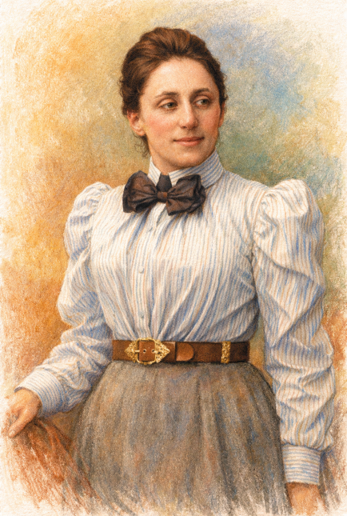

Leonhard Euler
1707 – 1783
↩ přetočit
Leonhard Euler
Analýza, teorie čísel, fyzika
Nejplodnější matematik v historii. Psal vědecké práce i poté, co úplně oslepl. Zavedl notaci \(f(x)\), \(e\), \(i\), \(\pi\) a \(\Sigma\).
Carl Friedrich Gauss
1777 – 1855
↩ přetočit
Carl Friedrich Gauss
Teorie čísel, statistika, geometrie
Jako devítiletý prý okamžitě sečetl čísla 1 až 100. Výsledek: 5050. Učitele tím ohromil — a měl pravdu.
Bernhard Riemann
1826 – 1866
↩ přetočit
Bernhard Riemann
Komplexní analýza, geometrie
Zemřel ve 39 letech, přesto změnil matematiku i fyziku. Jeho hypotéza o nulách zeta funkce je dodnes nevyřešená — za řešení je odměna 1 000 000 $.
Srinivasa Ramanujan
1887 – 1920
↩ přetočit
Srinivasa Ramanujan
Teorie čísel, nekonečné řady
Samouk z Indie bez formálního vzdělání. Svůj talent popsal jako zjevení od hinduistické bohyně. Mnohé jeho výsledky jsou platné dodnes — a nikdo neví jak na ně přišel.

Emmy Noether
1882 – 1935
↩ přetočit
Emmy Noether
Abstraktní algebra, fyzika
Einstein ji nazval „nejdůležitější ženou v historii matematiky". Její věta spojuje symetrie s fyzikálními zákony zachování. Přednášela pod cizím jménem, protože ženy nesměly na univerzitu.
Alan Turing
1912 – 1954
↩ přetočit
Alan Turing
Logika, informatika, kryptografie
Otec moderní informatiky. Prolomil nacistickou šifru Enigma a zachránil miliony životů. Jeho abstraktní „Turingův stroj" definoval, co je vůbec možné vypočítat.